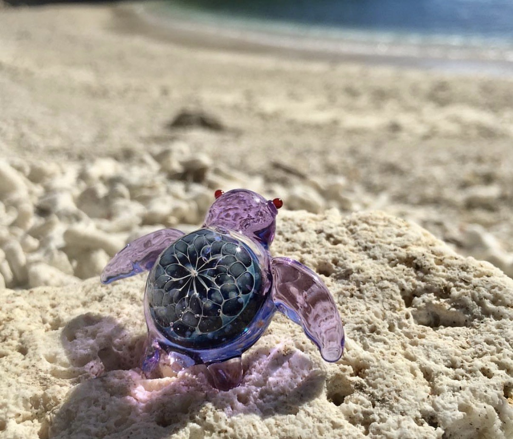
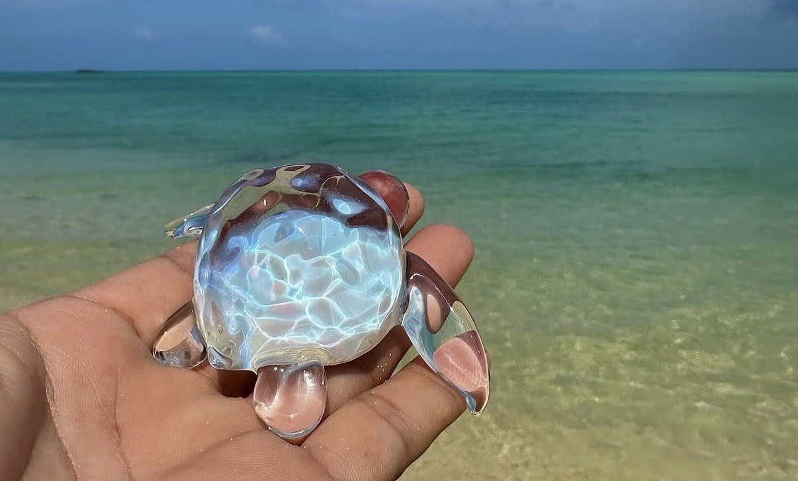
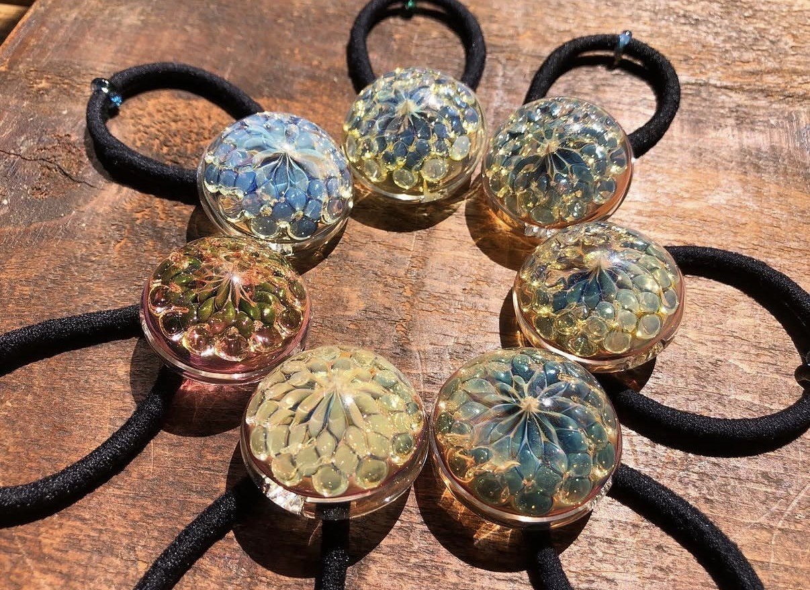
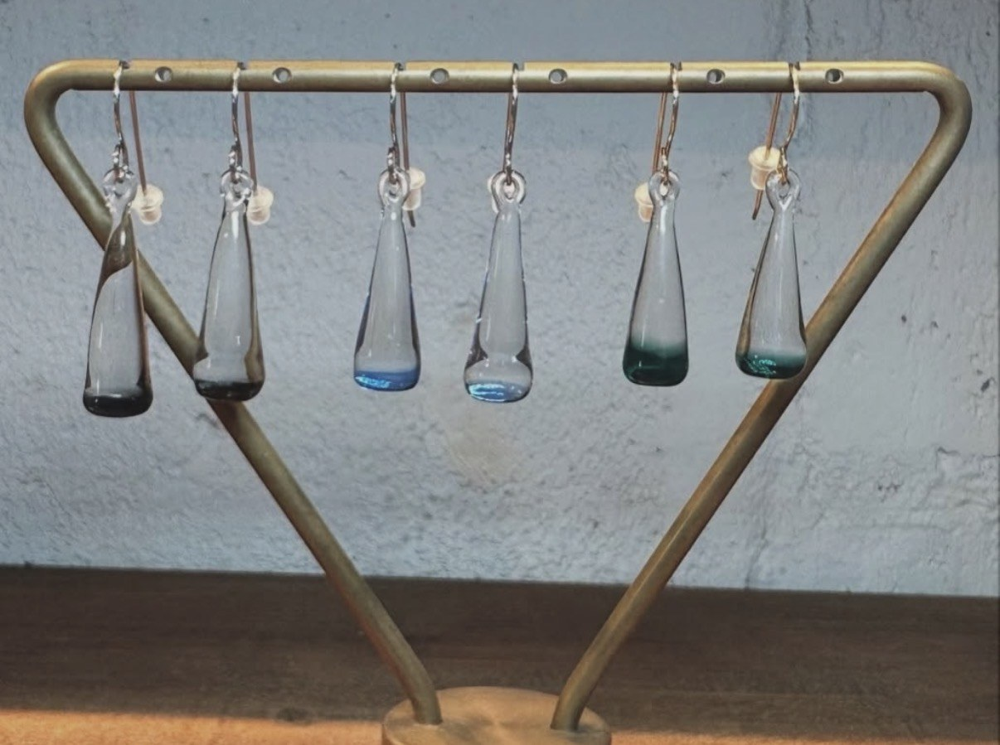
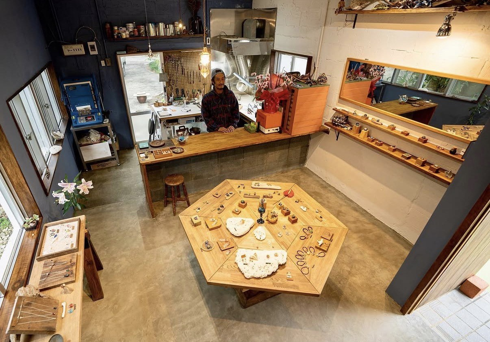

Guru Guru Glassグルグルグラス
Handmade glass art, accessories, custom pieces, and workshops made in Miyakojima by glass artist Makoto.
ガラス作家・誠さんが宮古島で手がける、ハンドメイドのガラス作品・アクセサリー・オーダー作品・ワークショップ。
Guru Guru Glass is a small handmade glass shop and showroom in Miyakojima, filled with colorful pieces that feel playful, personal, and truly island-made.
Guru Guru Glassは、宮古島にある小さなハンドメイドガラスショップ・ショールーム。遊び心があり、手に取る人の記憶に残る、島で生まれたガラス作品に出会えます。
The shop carries ocean-colored pendants, delicate earrings, hair ties, tiny glass turtles, small creatures, and custom pieces. It is a lovely stop for travelers who want something more meaningful than a standard souvenir.
海の色を感じるペンダント、繊細なピアス、ヘアゴム、小さなガラスのカメや生きもの、オーダーメイド作品などが並びます。よくあるお土産ではなく、旅の思い出として大切にしたくなるものを探している方におすすめです。
Why My Miyakojima Recommends ItMy Miyakojimaがおすすめする理由
My Miyakojima recommends Guru Guru Glass because each piece feels connected to Miyakojima without becoming too obvious or generic. The colors, shapes, and handmade details carry the island in a quiet, joyful way.
My MiyakojimaがGuru Guru Glassをおすすめする理由は、作品のひとつひとつに宮古島らしさがありながら、ありきたりなお土産にはならない特別さがあるからです。色や形、手仕事の細かな表情から、島の明るさや楽しさが自然に伝わってきます。
Photos 写真





Workshops and Custom Pieces ワークショップ・オーダーメイド
Workshops are available by reservation through Instagram DM or phone. If you want to add a hands-on creative stop to your Miyakojima trip, contact Guru Guru Glass in advance.
ワークショップは予約制です。InstagramのDMまたは電話で事前にお問い合わせください。宮古島旅行の中で、ものづくりの時間を楽しみたい方にもおすすめです。
Custom pieces and current shop updates are best confirmed through Instagram or the official site before visiting.
オーダーメイド作品や最新情報は、来店前にInstagramまたは公式サイトで確認するのがおすすめです。